Три легаси-системы → одно рабочее место · 250 000 обращений · 8 700 операторов
За три года построил информационную архитектуру и интерфейсы раздела, который объединил три устаревшие системы и две линии поддержки в одном рабочем месте. От первого API до последней миграции — все дизайн-решения мои.
Раздел «Аресты и взыскания» в SmartCare — итог трёх лет проектирования
01 · Импакт
Коротко о результате
~250 000Обращений в месяцМасштаб тематики
0%AHT по тематике~8 мин → ~5 мин
0%FCR по ключевым тематикамБыло 23%
3 системыВыведены из эксплуатацииCRM, АС АиВ, АС Бэкофис
⬅️
Shift Left: часть процессов перенесена со 2-й на 1-ю линию — дешевле для бизнеса, быстрее для клиента. Детальные метрики по каждому этапу — ниже.
02 · Контекст
Как устроены аресты и взыскания
«У меня списывают с карты каждый месяц — сколько я ещё должен?» — с такими вопросами клиенты приходят в контакт-центр. В 2022 году функционала арестов и взысканий в едином рабочем месте не было. Информация была разбросана по трём системам — CRM, АС АиВ и АС Бэкофис, у операторов первой линии доступ был в CRM.
Задача — построить функционал для работы с арестами и взысканиями в рабочем месте SmartCare. Начали с миграции CRM в 2022. До АС АиВ и Бэкофиса дошли в конце 2024 — начале 2025.
Предметная область
Более 95% документов поступают через ФССП. Базовый порядок:
1
Наложение арестаСредства заблокированы
2
Снятие + взысканиеСредства списываются
3
ИсполненДолг закрыт
Арест замораживает средства на счёте, взыскание — списывает в пользу взыскателя. Снятие ареста и наложение взыскания, как правило, приходят одним гибридным документом. Когда вся сумма списана — взыскание меняет статус на «исполнен», отдельного документа на это не приходит.
Арест могут отменить без взыскания — например, по решению суда: средства просто разморозятся. Если документ принесён клиентом напрямую — это сразу взыскание, без ареста.
⚖️
Банк обязан исполнить каждый документ от ФССП, даже очевидный дубль. Отозвать лишние может только пристав — оператор направляет клиента в ФССП.
03 · Этап 1 · 2022
Первый вход — через продукт
Задача: построить функционал арестов и взысканий в SmartCare, начав с миграции CRM.
Проанализировали CRM и API. Сервис отдавал данные только по продукту — на вход нужно было подать конкретную карту или вклад. Вход через документ или через клиента был технически невозможен.
Решение — добавить вкладку «Аресты» внутрь каждого продукта. Спроектировал список документов в хронологическом порядке с фильтром «действующие / исполненные».
На карточке документа в списке — номер, название, статус с цветовой индикацией. Внутри — данные разбиты на смысловые группы, собранные совместно с бизнесом: общая информация и информация по документу. Эта структура стала базой для следующих этапов. В CRM ничего из этого не было.
Вход через продукт — осознанный компромисс: оператор видит информацию по одному продукту, а аресты могут затрагивать несколько карт и вкладов одновременно. Но вход через документ требовал нового сервиса. Архитектуру заложили так, чтобы переход к модели долга не потребовал ломать работающее. После появления входа через документ вход через продукт не отключили — для вопросов по конкретному списанию с конкретной карты он до сих пор проще.
smartcare.sberbank.ru/arrests
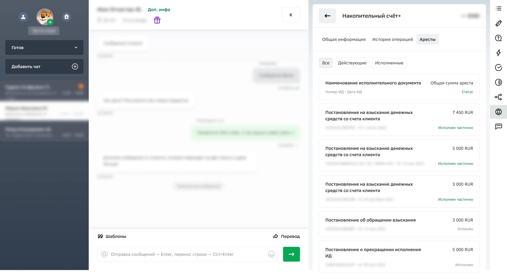
Вход через продукт, вкладка «Аресты»
smartcare.sberbank.ru/arrests/document
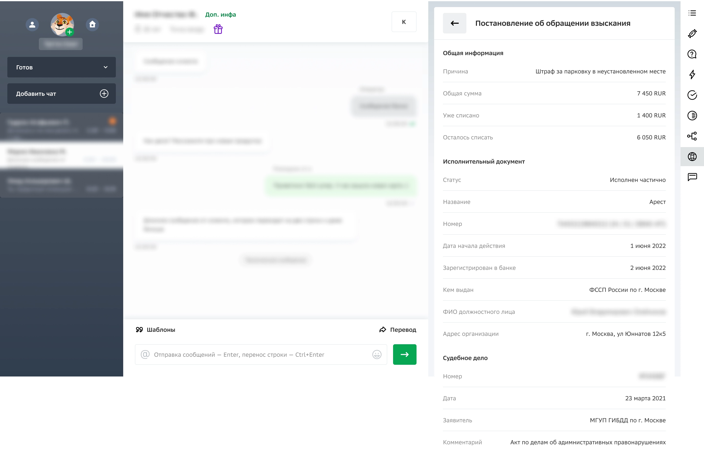
Карточка документа взыскания — вход через продукт
Рост FCR после миграции
Данные были доступны и в CRM — рост FCR обеспечен не появлением информации, а её структурой и навигацией в новом интерфейсе.
Было23,5%
FCR «Арест. Прочее»
65,9% · «Информация по аресту»
Стало60,7%
+37 п.п. после миграции
68,8% · +2,9 п.п.
Опрос операторов · 300+ респондентов
4,6 / 5Понятность информации
4,7 / 5Удобство раздела
+4%Лояльность к новому интерфейсу
Сравнение SmartCare и CRM · внутренний опрос
Операторам не хватало: взыскатель, причина долга, прожиточный минимум, история списаний. Эти потребности определили roadmap этапов 2 и 3.
Гемба — наблюдение на рабочих местах
Операторы справлялись с простыми вопросами, но на сложных теряли контекст — документы были, а картина долга не складывалась.
Рабочее место оператора контакт-центра — гемба, наблюдение за обработкой обращений
Инсайт
Не хватало не данных, а структуры. Документы были — контекст долга отсутствовал.
Звонит клиент, говорит — списали деньги. У него три карты. Я по очереди открываю каждую, ищу документ. Нашла — а там два ИП, и оба активные. Пока разбираюсь, клиент уже нервничает.
Оператор 1-й линии · гемба
Этап 1 закрыл базовую потребность — данные стали доступны в одном интерфейсе. Но у операторов не было целостной картины долга: только документы на каждом продукте по отдельности.
От документов — к ментальной модели долга
04 · Этап 2 · 2023 — осень 2024
Все долги клиента — в одном разделе
Параллельно с проектированием формировали требования к владельцам сервисов: собирали матрицу атрибутов, приходили с прототипами и показывали, что нужно оператору и без чего консультация невозможна. Переговоры были долгими, но мы получили нужные поля.
Я спроектировал отдельный раздел «Аресты и взыскания» — новая точка входа на главной. Расположение определил через исследование: ставил перед операторами задачу найти раздел и фиксировал, куда они идут. Иконку подбирали через тестирование с операторами из библиотеки СберБанкОнлайн — выбирали наиболее узнаваемую. На этом этапе раздел только для клиента-должника — сервиса для клиента-взыскателя ещё не существовало.
smartcare.sberbank.ru — главная
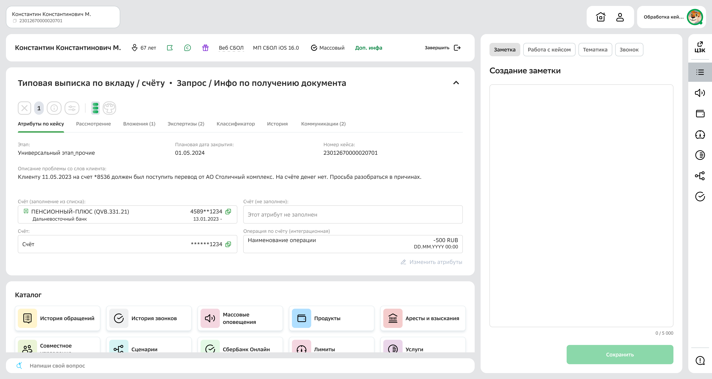
Точка входа «Аресты и взыскания» на главной SmartCare
Конфликт ментальных моделей
Списывают каждый месяц — сколько ещё?Почему списали больше, чем должен?С карты сняли — за что?
Клиент мыслитДолгСвои деньги, свои долги, свои списания
Клиент говоритУ меня алименты, каждый месяц снимают — когда закончится?
Оператор ищетИП 77/15/44821, тип 4, статус 25, накопительное взыскание, ежемесячное удержание
ОграничениеAPI отдавал данные по продукту, а не по долгу и не по документу. Это расхождение стало главным архитектурным вызовом.
Архитектурные решения
Группировка по исполнительному производству. Документы по одному долгу ложились в плоский список — операторы связывали их вручную. Я ввёл группировку по номеру ИП: все документы одного долга собраны вместе. Рассматривались разные варианты навигации и тестировались — победила версия с проваливанием внутрь ИП на отдельный экран и разделением на табы «Действующие / Завершённые».
smartcare.sberbank.ru/arrests
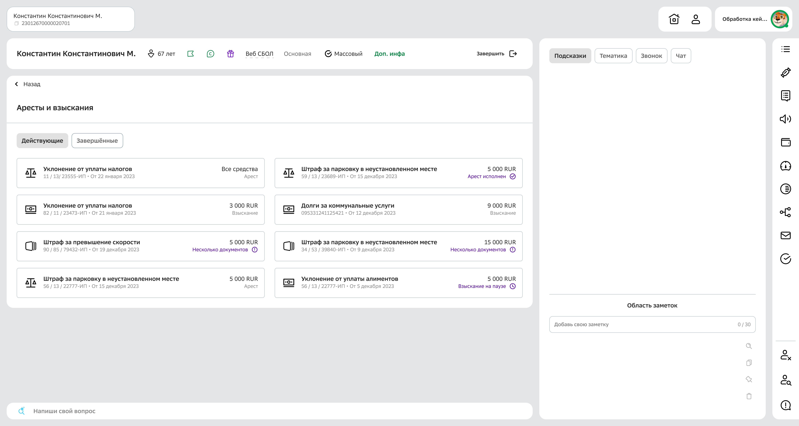
Список действующих документов, группировка по ИП
Связь ареста и взыскания внутри ИП
Группировка по ИП решала навигацию на верхнем уровне, но внутри одного ИП может быть несколько арестов и несколько взысканий. Чтобы гарантированно связать конкретный арест с конкретным взысканием, нужен был дополнительный признак — сервис его не отдавал.
Через серию встреч вышли на владельца фабрики данных — оказалось, что признак уже существует и передаётся сервису, просто не включён в наш контракт. После этого его добавили — и связь заработала. Без неё оператор видел бы пачку документов внутри ИП, но не мог бы однозначно понять, какое взыскание относится к какому аресту — а для консультации это критично.
Принцип
Архитектурные решения проектировались от сценария оператора — даже когда API диктовал другую логику.
Маппинг статусов
Сервис отдавал 14 сырых технических статусов. Я свёл их к 10 понятным состояниям: часть убрал (технические — Новый, Блокирован, Розыск, Проверка), часть объединил (например, «Отозван» и «Отменён» → «Отменён»). Разбил на два таба — «Действующие» и «Завершённые». Результат согласован с бизнесом.
14 → 10: полная таблица маппинга+
Убраны · 4 статусаТехнические, оператору не нужны
НовыйБлокированРозыскПроверка
Действующие · 5 состоянийДокумент ещё в работе
Логика
Статус на UI
Дефолт — статус не показываем, и так понятно
Арест
Дефолт — аналогично, средства списываются
Взыскание
Нестандарт: заблокированы, но взыскание не наложено
Арест исполнен
Нестандарт: приостановлено (суд, мораторий, СВО)
Взыскание на паузе
Нестандарт: аналогично, приостановлен
Арест на паузе
Завершённые · 5 состоянийФинальный статус
Логика
Статус на UI
Долг закрыт полностью
Взыскание исполнено
Объединение: «Отозван» + «Отменён» → один
Арест отменён
Банк отказал в исполнении
Взыскание отказано
Аналогично
Арест отказан
Объединение: «Отозван» + «Отменён» → один
Взыскание отменено
Документ отмены → статус
На интервью выяснил: из документа отмены операторам первой линии нужна только дата отмены и понимание этапа жизненного пути долга.
Документы отмен не отображаются в списках. В гибридных документах внутри взыскания отображается плашка — арест в статусе «отменён» с датой отмены. Вместо отдельного документа — статус. Это убрало значительную часть документов из списков первой линии.
smartcare.sberbank.ru/arrests/document
Плашка ареста внутри документа взыскания
Типы карточек и иконки
Для визуальной навигации — своя иконка для каждого типа: арест, взыскание, пачка документов ФССП, позже — отмена. Статусом отмечали только нестандартные состояния — то, на что оператору стоит обратить внимание.
Арест средства заблокированы
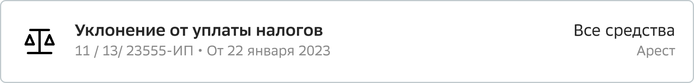
Взыскание средства списываютсяНесколько документов по одному ИП
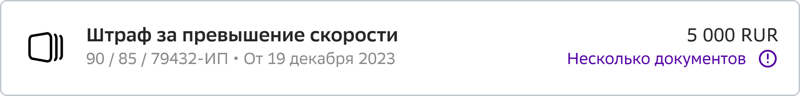
Арест исполнен взыскание ещё не наложено
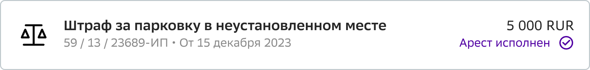
Взыскание на паузе суд, мораторий, СВО
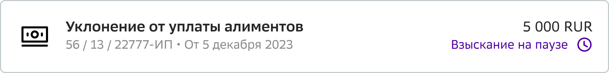
⚙️
Сервисы отдавали сырые данные. Значительную часть логики реализовали на своём бэкенде и фронтенде: группировка по ИП, порядок вызова сервисов, маппинг статусов, правила отображения. Фичи добавлялись итеративно — по мере появления сервисов.
Внутри исполнительного производства
Документы внутри группы тоже разделены на действующие и завершённые. Системное уведомление: по одному ИП одновременно может действовать или арест, или взыскание. Если больше — это дубли от приставов, рекомендация обратиться в ФССП.
smartcare.sberbank.ru/arrests/ip/details
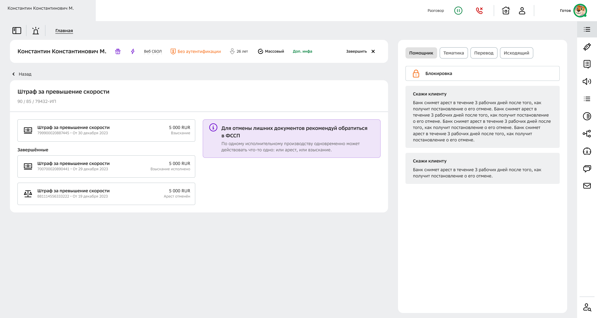
Документы ИП: действующие вверху, завершённые ниже, системное уведомление о дублях
Карточка исполнительного документа
Поля разбиты на смысловые группы по приоритету: самая востребованная информация — выше, специфичная — ниже. Карточка дорабатывалась от релиза к релизу: от базовой версии с тремя блоками до полной — с отправкой СМС, привязкой продуктов, плашкой ареста внутри взыскания. Атрибуты и названия полей уточнялись по мере использования в КЦ.
Карточка ИД — финальная версия
Нажмите для полного просмотра
Карточка ИД — полная версия с дообогащением
Юзабилити-тестирование и гемба
Юзабилити-тесты — 100% прохождение задач. Операторы решали кейсы-имитации реальных звонков: «У меня списали 2 000 ₽ за штраф, который 1 000 — почему?» (дубль документа), поиск конкретного ИП среди нескольких, проверка статуса документа. Все сценарии пройдены без подсказок.
Гемба после запуска: операторы положительно отзывались о входе через документ, отмечали удобную группировку и статусы.
Раньше я открывала каждую карту отдельно и искала нужный документ. Сейчас захожу в раздел, вижу все долги сразу — нахожу за секунды.
Оператор 1-й линии · гемба после запуска
−35%AHT по тематикеОсобенно при множественных документах
+6,7 п.п.FCR «Прожиточный минимум»51,75% → 58,46%
100%Юзабилити-тестыВсе задачи пройдены
Сопутствующие решения
Проверка прожиточного минимума (Q2 2023). Одна из самых запрашиваемых возможностей. Внедрена между первым и вторым этапами — ещё в рамках входа через продукт, когда модель долга только проектировалась. FCR по тематике вырос с 51,75% до 58,46%. Полноценный раздел — на этапе 3.
Блок «Для арестов» в операциях по вкладам. Оператор видит разбивку средств по категориям начислений прямо внутри операции, не переходя в раздел арестов.
smartcare.sberbank.ru/deposits/operation
Нажмите для полного просмотра
Блок «Для арестов» внутри операции по вкладу
Функционал первой линии закрыт. Архитектура раздела оказалась масштабируемой: когда на следующем этапе начали встраивать процессы второй линии, обогащать данными из АС АиВ и Бэкофиса — всё ложилось в существующую структуру без переделок.
Вторая линия переезжает в единое рабочее место
05 · Этап 3. Осень 2024–2025
Одна архитектура — обе линии поддержки, три миграции, Shift Left
Задача: пересадить вторую линию на платформу SmartCare. Три параллельных трека: миграция рабочего места ЦЗК, миграция АС АиВ и миграция АС Бэкофис. Каждая фича ниже — часть одного из этих треков или сквозного Shift Left.
Параллельно на уровне всего продукта шёл трек Shift Left — перенос процессов со второй линии на первую. При проектировании каждой фичи решали: давать её только второй линии или открыть первой тоже. Часть функционала, ранее доступного только экспертам, стала доступна первой линии: история списаний, моратории, полный раздел прожиточного минимума, документы отмен, солидарные должники, клиент-взыскатель. Часть обращений теперь решается без эскалации.
Пользовались существующими сервисами, точечно дорабатывая их. Подключился ещё один аналитик. Каждая фича — работа на 1–3 спринта.
smartcare.sberbank.ru/arrests
Раздел после этапа 3: клиент-должник, клиент-взыскатель, розыск документов, история, моратории, ПМ
Гемба ЦЗК — февраль 2025
Проведена в начале этапа, до большинства фич. Приехали к операторам ЦЗК, когда только начинали адаптировать интерфейсы. Именно здесь стало ясно, что нужны документы отмен, протоколы и другие детали, скрытые от первой линии.
Нам нужен номер документа отмены, чтобы оформить экспертизу. Без него мы не можем эскалировать.
Оператор ЦЗК · гемба, февраль 2025
Конфликт моделей и три точки входа для отмен
⚠️
На этапе 2 я убрал документы отмен из интерфейса первой линии — превратил их в статус. Модель была стройной.
На гембе ЦЗК выяснилось: для второй линии документы отмен всё-таки нужны. Номера документов используются при оформлении экспертиз — передаче материалов юристам и узким специалистам. Кроме того, документ отмены может не привязаться к ИП по технической ошибке.
Поначалу казалось — модель ломается. Но удалось разделить отображение по рабочим местам и спроектировать три точки входа: общий список для непривязанных документов, внутри группы ИП — для документов, не привязавшихся по технической причине, и таб «Отмены» внутри карточки — для конкретного документа.
Модель долга для первой линии не затронута.
Глубокий кейс: структура списаний и начислений
Когда клиент говорит «вы списали деньги, которые не имели права списывать» — оператор проверяет здесь. Средства при поступлении на счёт попадают в одну из категорий (защищённые социальные, частично защищённые, периодические, прожиточный минимум). При списании — тоже из определённой категории с приоритетом.
По итогу погружения в процесс стало ясно, что нужна таблица для отслеживания движения средств по датам. Раньше у операторов тоже была таблица в старом интерфейсе, но без ключевых возможностей. Компонента таблицы в дизайн-системе не было.
Задача — сравнение чисел и поиск изменений: когда и как менялись остатки в каждой категории. Я собрал компонент с нуля.
Равноширинный шрифтСовпадение разрядов при сравнении чисел по вертикали
Горизонтальный скроллФиксация первой ячейки — названия категорий всегда видны
Выделение строкиПрилипание при вертикальном скролле для удобства сравнения
Двухэтажные заголовкиКомпактная подача сложной структуры данных
Задокументировал все решения. Позже совместно с библиотекарем подсветил всё для сборки компонента в дизайн-систему. Компонент переиспользуется за пределами проекта.
smartcare.sberbank.ru/arrests/charges
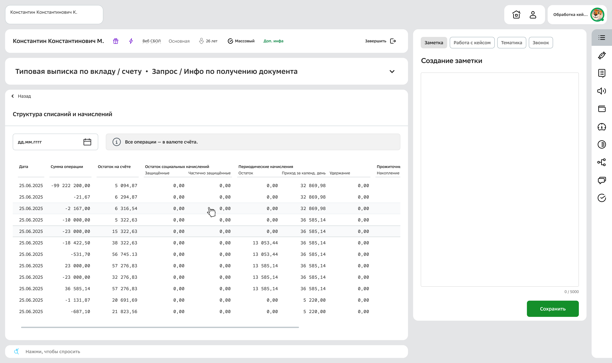
Таблица структуры списаний и начислений
smartcare.sberbank.ru/arrests/charges — фильтр
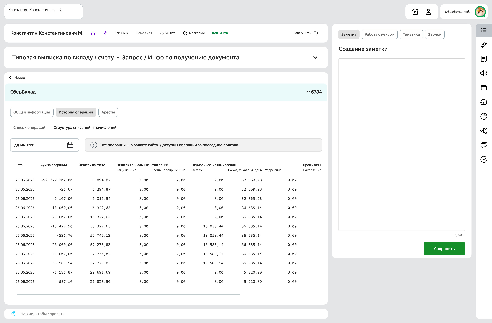
Таблица — другое состояние данных
Другие фичи этапа 3
История списаний+
Одна из самых запрашиваемых фич — с первого этапа. Переиспользована история операций по вкладам с адаптацией — это снижает когнитивную нагрузку для операторов, уже знакомых с паттерном. Переключение: все / аресты / взыскания. Поиск, группировка по месяцам, фильтры.
История списаний
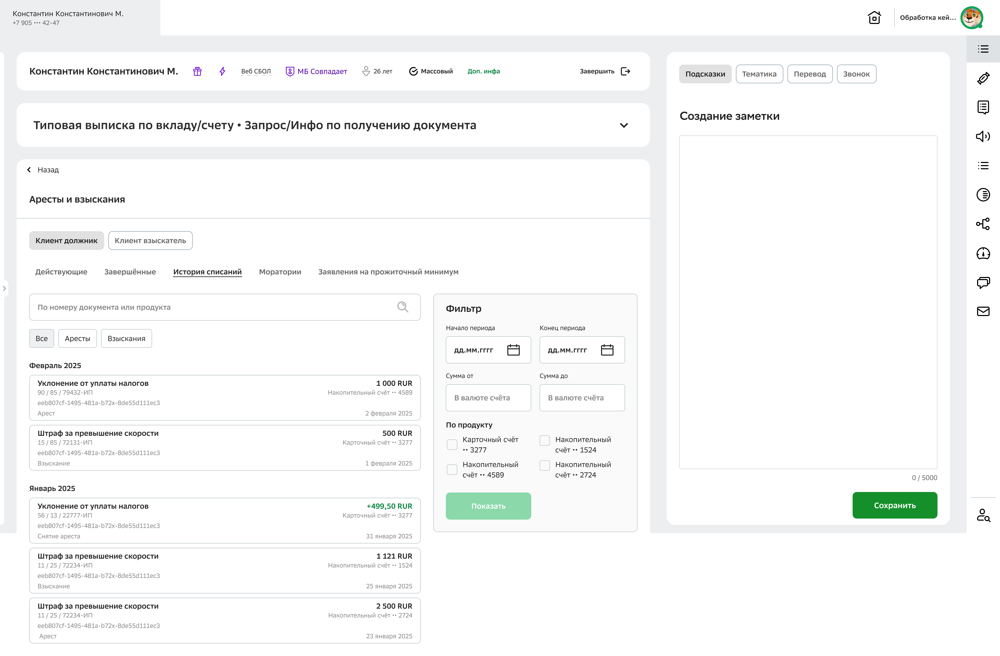
Документы на прожиточный минимум+
Базовая проверка работала с этапа 2. Полноценный раздел появился, когда был готов сервис: хронология заявлений и постановлений, сортировка по статусам, действующий сверху.
Документы на ПМ — постановления
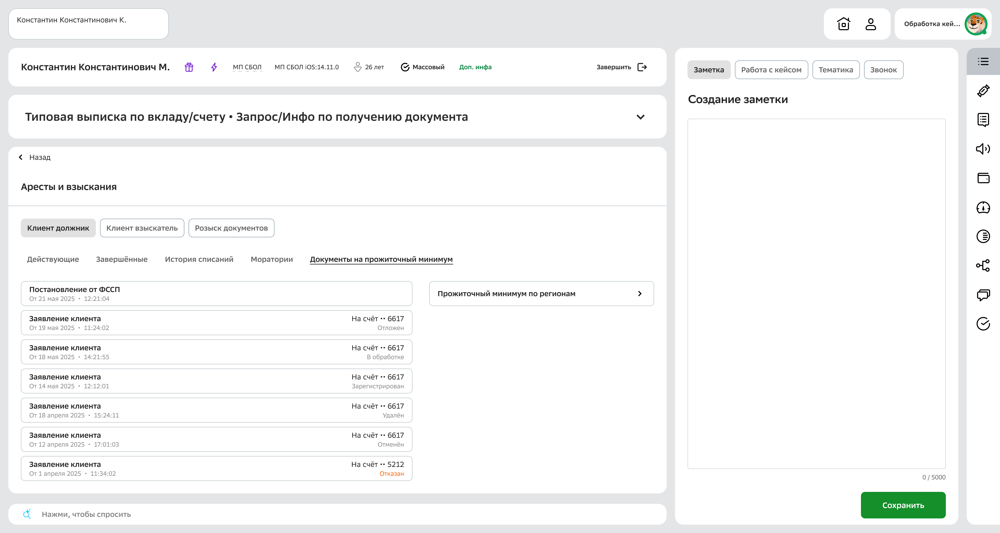
Документы на ПМ — заявления клиента
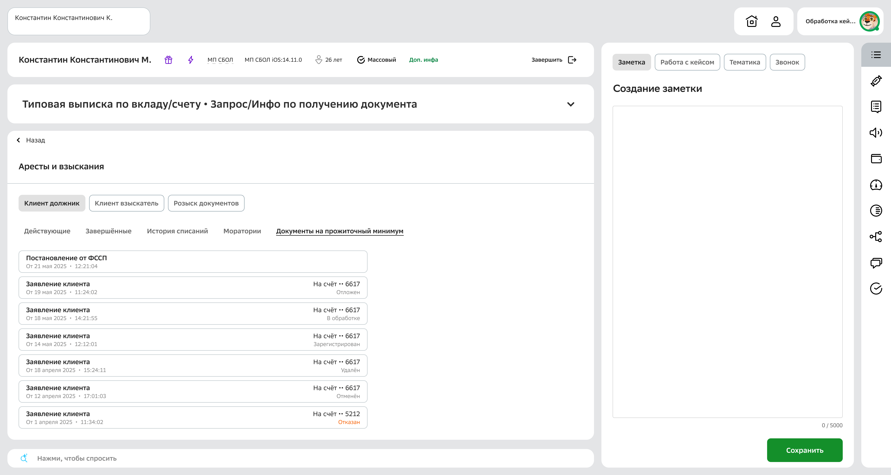
Справочник прожиточного минимума по регионам+
Поиск по региону, постановление правительства, значения для трудоспособных, пенсионеров, детей. Общее по России — всегда видно.
Справочник ПМ
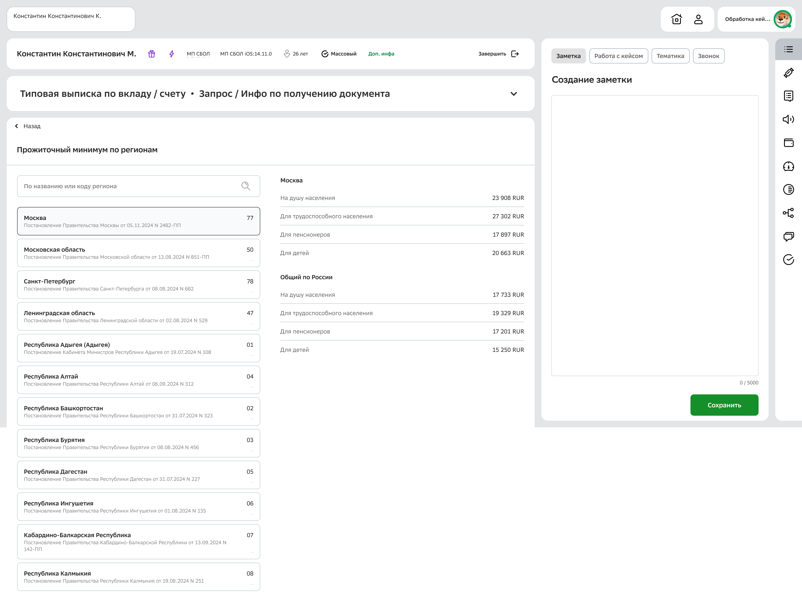
Солидарные должники+
По одному ИП может быть несколько созаёмщиков. Таб карточки документа.
Солидарные должники
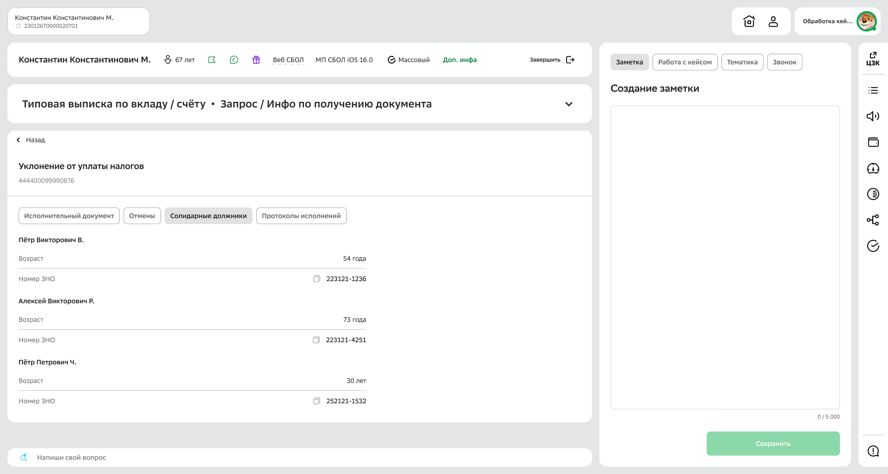
История изменений+
Все правки по документу с авторами и датами в формате «было / стало».
История изменений — было / стало
Протоколы исполнений+
Лог действий системы по документу. Отдельный сервис.
Протоколы исполнений
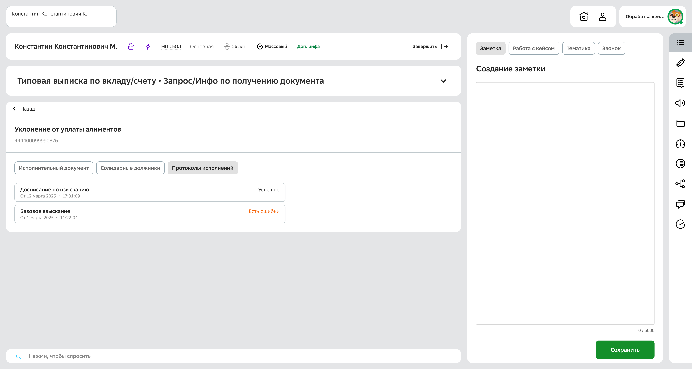
Клиент-взыскатель. По масштабу — как весь функционал должника, но с нуля: другой сервис, другая бизнес-логика. UI максимально похож на раздел должника, но адаптирован под другие атрибуты. Отдельная точка входа по уровню аутентификации для не-клиентов банка. Розыск документов — сценарий поиска и ручной привязки непривязанных документов по косвенным признакам.
Развитие карточки для второй линии
Новые атрибуты, названия уточнялись по мере использования. Добавлены табы: Отмены, Солидарные должники, Протоколы исполнений (лог действий системы) и История изменений (все правки с авторами в формате «было / стало») — разные сервисы, разные задачи.
Карточка ИД — вторая линия
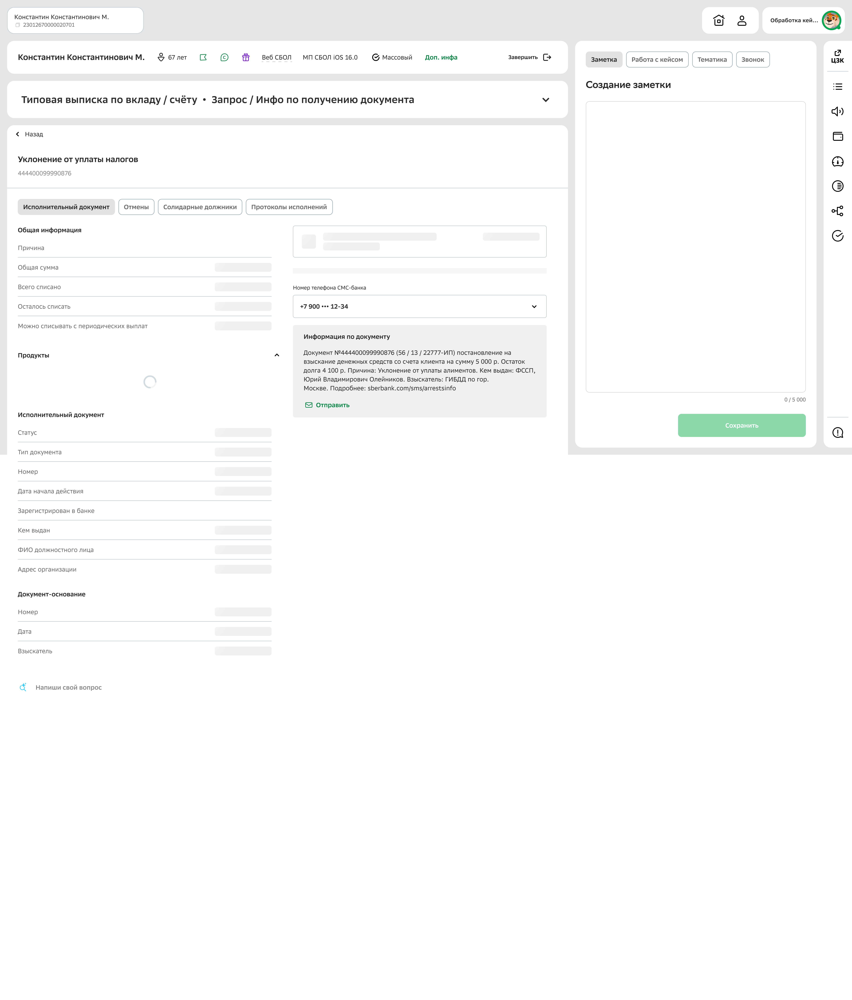
Нажмите для полного просмотра
Карточка ИД — экран загрузки документа
Карточка ИД — вторая линия
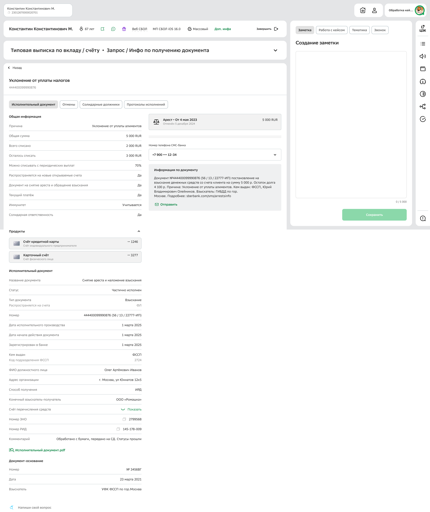
Нажмите для полного просмотра
Карточка ИД для второй линии — все табы и атрибуты
Гемба после внедрения
Операторам ЦЗК было непросто пересаживаться с привычного рабочего места, но они справлялись и находили всё необходимое. Сквозная тема на всех этапах — согласования с ИБ: маскирование персональных данных с размаскированием и записью в лог.
Эволюция информационной архитектуры
Архитектура раздела развивалась три года. Переключайтесь между этапами:
Через продукт
Продукт клиентаКарта, вклад, счёт
Вкладка «Аресты»Документы этого продукта
Список документовХронологический порядок
Карточка документаТолько базовые данные
4 уровня
Сервис A
Ещё не спроектировано
Через раздел
Аресты и взысканияРаздел на главной
Клиент должникКлиент взыскательРозыск документов
ДействующиеЗавершённыеИстория списаний
МораторииЗаявления на ПМ
Документы с активным статусом, сгруппированные по ИП.
Группы по ИПВсе документы одного долга
Документы внутри группыСвязи, статусы, отмены
Карточка документаПолные данные + продукты
ДокументОтменыДолжники
Протоколы исполненийИстория изменений
Основная информация, СМС, плашка ареста, продукты.
5 уровней + табы
Сервис BГруппировка по долгу
Одна точка входа через продукт. Плоский список документов.
06 · Мой вклад
Единственный дизайнер на протяжении трёх лет
🔍
Исследования → roadmapГембы, опросы (300+), юзабилити-тесты, интервью. История списаний запрашивалась с первого этапа — появилась на третьем, потому что я доказал приоритет через данные исследований
🧩
Информационная архитектура → масштабируемая структураЗащитил группировку по ИП на демо с бизнесом — альтернатива (плоский список с фильтрами) была проще, но ломала сценарий оператора. Архитектура выдержала три миграции без переделок
🧱
UI и компоненты → дизайн-системаКомпонент таблицы собран с нуля, передан в библиотеку, переиспользуется за пределами проекта
🤝
Кросс-функциональное лидерство → нужные данныеЧерез серию встреч вышел на владельца фабрики данных и получил признак связи ареста и взыскания — без него половина интерфейса не работала бы. Согласования с ИБ, требования к сервисам
Команда: аналитик (основной) · аналитик (с этапа 3, по фичам) · исследователь (с этапа 2) · фронтенд-разработчик · бэкенд · продакт. Дизайн-решения — от информационной архитектуры до компонентов — полностью мои.
Если бы начинал сейчас — с первого этапа закладывал бы архитектуру под две линии. Второй линии не было в повестке, решение пришло сверху. Раздел арестов масштабировался хорошо, но для части сценариев ЦЗК интерфейс выиграл бы от решений, заложенных с самого начала.
АРАнтон Рудник · рефлексия
Архитектура второго этапа выдержала три миграции без перестройки